3.1 Are User Growth and Inference Costs Rising Together?
Looking at active user metrics as they relate to cluster compute capacity – we wanted to start off simple with a scatterplot and trendline to give a taste of the scale and direction the industry of AI is heading towards. Let’s begin by looking at the elephant in the room, OpenAI:
Code
g1 <-ggplot(usage_reports, aes(Date, `Active users`/1e9)) +# geom_line(color = "grey30") +geom_point(size =1) +geom_smooth(method ="loess", span =0.5, se =FALSE) +labs(title ="Loess Curve of OpenAI's Monthly Active Users Over Time",x ="Date",y ="Number of Users (in billions)") +theme_minimal()g1
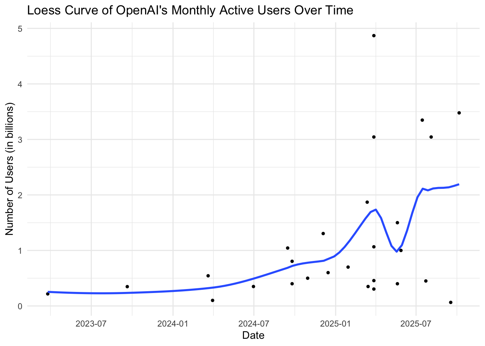
For this graph, we used the Loess method to see if we see could extrapolate some patterns out of our noisy user-metrics - Notably, there was a dip in users of ChatGPT at the start of May 2025 which might be attributable to news of CEO Sam Altman having to testify before the U.S. Senate the same week (anti-AI sentiments) - Even so, the long term trend seems to point towards a steadily rising user base for OpenAI over the next couple of years
Now let’s take a look at the relationship between the aggregate amount of dollars spent by foundation model developers over time. Comparing OpenAI to Anthropic, we can see how each company prioritizes where to invest in compute. We selected Inference compute spend, R&D compute spend, and Total compute spend columns in pivot longer to be aggregated in my stacked bar chart. This helped to mitigate some of the effects of relevant values being dispersed across other columns and the presence of null entries (more on this in the missing data section).
Code
ggplot(compute_stacked, aes(x = Year, y = Amount, fill = Category)) +geom_col(position ="stack") +# Stacked barsfacet_wrap(~Company) +labs(title ="Breakdown of Total Compute Spend Over Time", y ="Amount of Dollars Spent",fill ="Expenditure Type") +theme_minimal() +theme(strip.text =element_text(),strip.background =element_rect(fill ="gray", color ="lightgray"), )
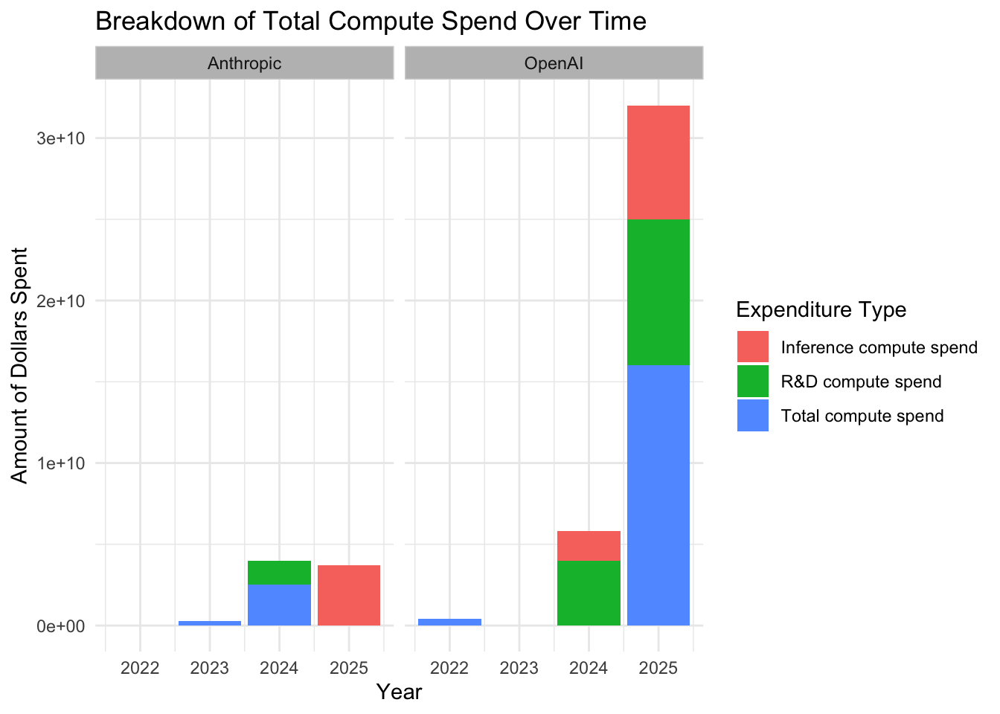
From the bar chart, it appears that OpenAI’s aggregate compute spending is growing exponentially; however, we cannot confirm this is truly the case since at least one of the three categories of expenditures are missing from the years 2022-2024. - This is the same, maybe even more so, in the case of Anthropic’s spending breakdown. - Cost values are completely non-existent in 2022 and 2023 for Anthropic and OpenAI respectively. Poor data collection, perhaps. - At least in 2026, OpenAI’s expenditures seem to be relatively balanced, but unfortunately, we don’t know how their total compute spend decomposes into the other two categories. While we don’t know the rest of the expenditures for Anthropic in 2026, their inference takes up all of their total compute spend in the previous year– signaling a shift in company priorities.
Combining the previous compute-cost time-series (specifically on inference) with the user-base time-series from the first plot for OpenAI, we can see how these trends unfold when graphed on top of each other:
Code
g2 <-ggplot() +geom_col(data = openai_stacked, aes(x = Date, y = Amount /1e9, fill = Category), position ="stack") +geom_point(data = usage_reports, aes(x = Date, y =`Active users`/1e9), size =1, color ="black") +geom_smooth(data = usage_reports, aes(x = Date, y =`Active users`/1e9), method ="loess", span =0.5, se =FALSE) +labs(title ="OpenAI's Inference Spending overlayed by Monthly Active Users (in billions)",x ="Date",y ="Dollars Spent (bars) / Users (loess curve)") +theme_minimal() +theme(legend.position ="none")g2
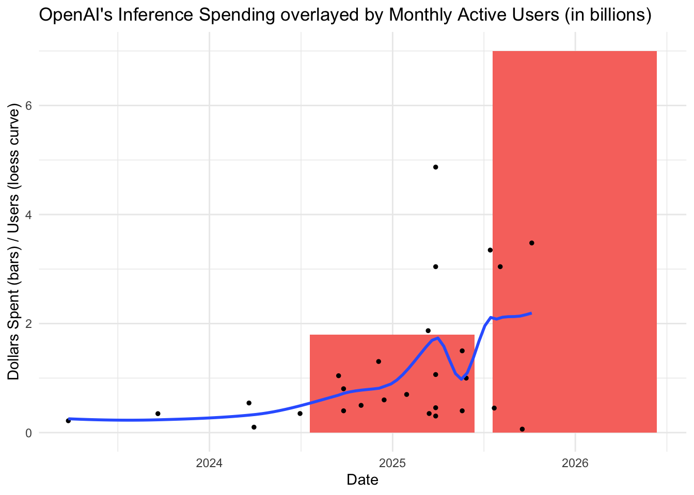
NOTABLE LIMITATIONS: - We combined the y-axis of both graphs since the dollars spent and number of active users have roughly the same number of observations. This is not a recommended practice. - We understand how this can appear misleading to the viewer; this graph may not be suitable should the dollars spent in the future outpace the number of users by a (visually) significant amount or vice versa.
Back to the analysis though, it just so happens that inference costs align almost 1:1 with the number of users. This is not entirely representative of our data since the total compute costs are not accounted for here! The real ratio of users to inference costs may likely be closer to 1:2, 1:3, etc. Overall, this preliminary look at how usage-compute capacity evolves over time gives us a lot of insight at the company level. Sadly these datasets don’t provide enough information at the moment to see if we are reaching (or will even reach) a plateau in compute and usage for the industry as a whole.
3.2 GPU Clusters
3.2.1 How Closely Are New Models Tied to New Compute Infrastructure?
Code
library(ggplot2)library(dplyr)library(readr)# Load the combined datasetcombined_data <-read_csv("./Data/combined_gpu_models.csv")# Create owner bucketsbucket_owners <-function(owner) {case_when(grepl("Google DeepMind", owner, ignore.case =TRUE) ~"Google DeepMind",grepl("OpenAI", owner, ignore.case =TRUE) ~"OpenAI",grepl("Anthropic", owner, ignore.case =TRUE) ~"Anthropic",grepl("xAI", owner, ignore.case =TRUE) ~"xAI",grepl("Meta", owner, ignore.case =TRUE) ~"Meta",grepl("Alibaba", owner, ignore.case =TRUE) ~"Alibaba",grepl("Microsoft", owner, ignore.case =TRUE) ~"Microsoft",grepl("Amazon", owner, ignore.case =TRUE) ~"Amazon",TRUE~"Other" )}# Apply bucketingcombined_data <- combined_data |>mutate(owner_bucket =bucket_owners(owner))# Separate models and clustersmodels <- combined_data |>filter(type =="model")clusters <- combined_data |>filter(type =="cluster", owner_bucket !="Other") # Exclude "Other" clusters for lines# Find the date of the first GPU clusterfirst_cluster_date <-min(combined_data$date[combined_data$type =="cluster"], na.rm =TRUE)# Filter both models and clusters to only include data after first clustermodels <- models |>filter(date >= first_cluster_date)clusters <- clusters |>filter(date >= first_cluster_date)# Define color palette for the bucketscolor_palette <-c("Google DeepMind"="#4285F4", # Google Blue"OpenAI"="#10A37F", # OpenAI Green"Anthropic"="#D4A574", # Anthropic Gold"xAI"="#000000", # Black"Meta"="#0668E1", # Meta Blue"Alibaba"="#FF6A00", # Alibaba Orange"Microsoft"="#00A4EF", # Microsoft Blue"Amazon"="#FF9900", # Amazon Orange"Other"="#808080"# Gray)# Create the plotggplot() +# Add vertical lines for GPU cluster operational dates (exclude "Other")geom_vline(data = clusters,aes(xintercept =as.numeric(date), color = owner_bucket),linetype ="dashed", alpha =0.6, linewidth =0.5) +# Add scatter points for modelsgeom_point(data = models,aes(x = date, y = training_compute, color = owner_bucket),alpha =0.7, size =2) +# Apply color palettescale_color_manual(values = color_palette, name ="Organization") +# Log scale for y-axis (training compute)scale_y_log10(labels = scales::scientific) +# Facet by organizationfacet_wrap(~ owner_bucket, ncol =3, scales ="free_x") +# Labels and themelabs(title ="AI Model Releases and GPU Cluster Deployment Timeline by Organization",subtitle ="Each panel shows models and GPU clusters\nfor a single organization",x ="Date",y ="Training Compute (FLOPs, log scale)",caption ="Vertical dashed lines represent GPU cluster first operational dates" ) +theme_minimal() +theme(legend.position ="bottom",plot.title =element_text(face ="bold", size =14),plot.subtitle =element_text(size =11),axis.text.x =element_text(angle =45, hjust =1),strip.text =element_text(face ="bold", size =10) )
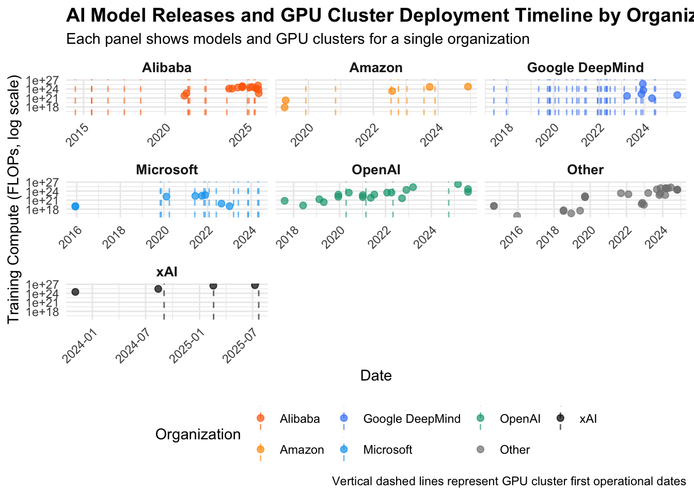
In this graph we visualize the date of model releases (dots) from different leading technology and AI companies. Overlayed as dashed lines, we plot the first operational date of GPU clusters from those same companies.
We would expect that model releases are delayed in comparison to GPU cluster opening dates since it would take significant computational resources to train a new model, usually several months of training for the largest models.
However, we see varied trends across different companies. OpenAI, for example, had released many models before ever opening their first GPU cluster, while Google had many GPU clusters before releasing their first model.
xAI (behind the Grok set of models) provides an interesting example of a clear cluster-to-model gap. The company seems to follow a very clear trend of having around a half-year delay between cluster opening and model release, with new models being released slightly before or slight after a new cluster becoming operational.
Overall, the this plot reveals the strengths and weaknesses of different players in the AI ecosystem. Google, being a legacy tech company which has always required heavy computational resources, already had many compute centers before releasing their first model. Alibaba follows a similar trend. On the other hand, an AI-first company like OpenAI likely had to outsource their model training compute to other companies before having their own clusters.
3.2.2 Do Companies Build Clusters Before Models or Models Before Clusters?
Code
library(ggplot2)library(dplyr)library(readr)# Load the cumulative compute timeline datacumulative_data <-read_csv("./Data/cumulative_compute_timeline.csv")# Convert date to datetime and training_compute to numericcumulative_data <- cumulative_data |>mutate(date =as.Date(date))# Filter to only OpenAIcumulative_data <- cumulative_data |>filter(owner_bucket =="OpenAI")# Separate clusters and modelsclusters <- cumulative_data |>filter(type =="cluster")# For models, only keep those with known training_compute and get top 10 by training_computemodels <- cumulative_data |>filter(type =="model", !is.na(training_compute)) |>arrange(desc(training_compute)) |>head(10)print(paste("Number of model release lines:", nrow(models)))
[1] "Number of model release lines: 10"
Code
# Create the plotggplot() +# Add step lines for cumulative compute (clusters only)geom_step(data = clusters,aes(x = date, y = cumulative_compute),linewidth =1, alpha =0.8, color ="#10A37F", direction ="hv") +geom_point(data = clusters,aes(x = date, y = cumulative_compute),size =3, alpha =0.6, color ="#10A37F") +# Add vertical dashed lines for model releasesgeom_vline(data = models,aes(xintercept =as.numeric(date)),linetype ="dashed", alpha =0.4, linewidth =0.5, color ="#10A37F") +# Log scale for y-axisscale_y_log10(labels = scales::comma) +# Labels and themelabs(title ="OpenAI: Cumulative GPU Cluster Compute Over Time",subtitle ="Line shows compute growth\nDashed lines indicate model releases",x ="Date",y ="Cumulative Compute (H100 equivalents, log scale)",caption ="Only existing clusters with known compute capacity included" ) +theme_minimal() +theme(plot.title =element_text(face ="bold", size =14),plot.subtitle =element_text(size =11),axis.text.x =element_text(angle =45, hjust =1),panel.grid.minor =element_blank() )
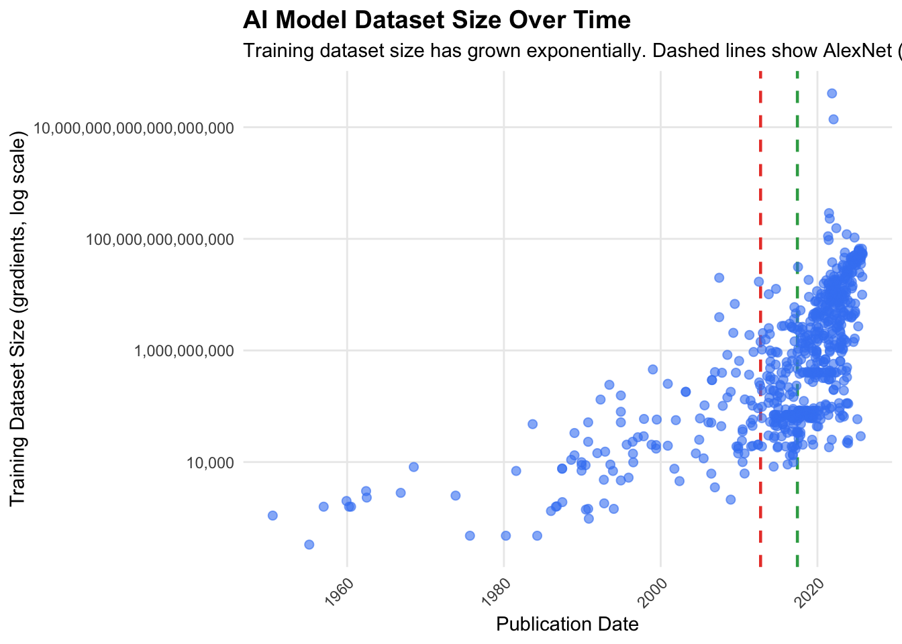
We can further understand the relationship between cluster development and model development by looking at similar graphs which instead plot compute capacity over time with model release dates overlaid. Particularly we are plotting cumulative compute capacity for major companies over time. We derive the cumulative compute available to companies over time as the sum of compute for their data centers. For these graph, we define cluster compute in terms of number of H100 equivalents (H100 being a popular GPU). We only plot notable companies with clusters to focus our results. Above is an example with OpenAI.
3.2.3 Is Everyone Scaling Compute at the Same Pace?
Code
library(ggplot2)library(dplyr)library(readr)# Load the cumulative compute timeline datacumulative_data <-read_csv("./Data/cumulative_compute_timeline.csv")# Convert date to datetimecumulative_data <- cumulative_data |>mutate(date =as.Date(date))# Get companies that have clusterscompanies_with_clusters <- cumulative_data |>filter(type =="cluster") |>pull(owner_bucket) |>unique()# Filter to only companies with clusters and exclude "Other"cumulative_data <- cumulative_data |>filter(owner_bucket %in% companies_with_clusters, owner_bucket !="Other")# Separate clustersclusters <- cumulative_data |>filter(type =="cluster")# For models, get top 10 by training_compute for each organizationmodels <- cumulative_data |>filter(type =="model", !is.na(training_compute)) |>group_by(owner_bucket) |>arrange(desc(training_compute)) |>slice_head(n =10) |>ungroup()# Define color palette (consistent with previous graphs)color_palette <-c("Google DeepMind"="#4285F4","OpenAI"="#10A37F","Anthropic"="#D4A574","xAI"="#000000","Meta"="#0668E1","Alibaba"="#FF6A00","Amazon"="#FF9900")# Create the plotggplot() +# Add step lines for cumulative compute (clusters only)geom_step(data = clusters,aes(x = date, y = cumulative_compute, color = owner_bucket),linewidth =1, alpha =0.8, direction ="hv") +geom_point(data = clusters,aes(x = date, y = cumulative_compute, color = owner_bucket),size =2, alpha =0.6) +# Add vertical dashed lines for model releasesgeom_vline(data = models,aes(xintercept =as.numeric(date), color = owner_bucket),linetype ="dashed", alpha =0.4, linewidth =0.3) +# Facet by organizationfacet_wrap(~ owner_bucket, ncol =2, scales ="free_y") +# Apply color palettescale_color_manual(values = color_palette, name ="Organization") +# Log scale for y-axisscale_y_log10(labels = scales::comma) +# Labels and themelabs(title ="Cumulative GPU Cluster Compute Over Time by Organization",subtitle ="Lines show compute growth\nDashed lines indicate top 10 model releases by training compute",x ="Date",y ="Cumulative Compute (H100 equivalents, log scale)",caption ="Only organizations with GPU clusters; top 10 models by training compute shown" ) +theme_minimal() +theme(legend.position ="none", # Hide legend since facets show organizationsplot.title =element_text(face ="bold", size =14),plot.subtitle =element_text(size =11),axis.text.x =element_text(angle =45, hjust =1),strip.text =element_text(face ="bold", size =10),panel.grid.minor =element_blank() )
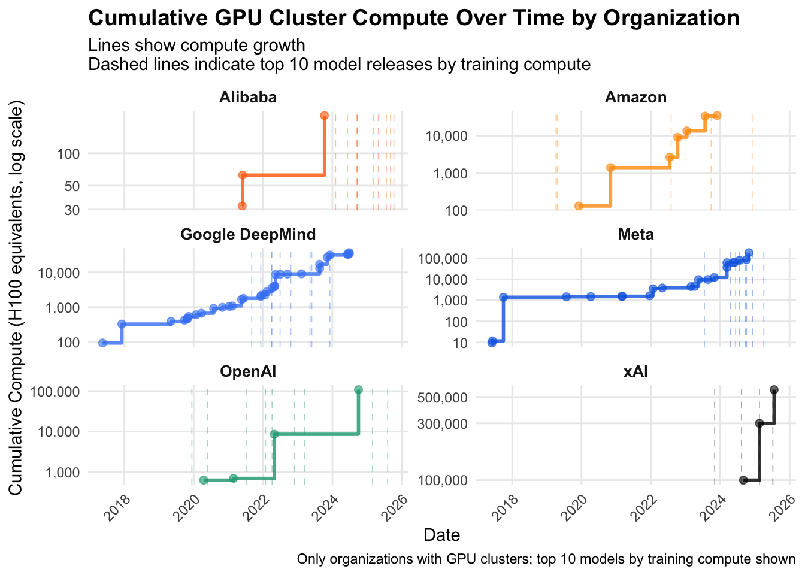
Here plot plot notable companies and the increase in their available compute over time. First note that to improve readability of the graph, we free the y-axis. However, it seems like major companies have increased their compute nearly exponentially. As consistent with the previous graphs, cluster opening time do not follow a predictable pattern in terms of model release, though, generally, it seems like different companies take different approaches in either having built infrastructure first or release models first.
3.2.4 GPU Cluster Characteristics
Let’s take a step back from looking at cluster compute for each company for a moment and take a peak at the most frequently listed countries from the tibble below. The tibble has a subset (top 5) of all the locations where the GPU clusters originated from. From there making the mosaic plot from other qualitative features such as how certain each cluster project was going to be rolled out, the sector each project was associated with, and whether or not the project was a single cluster was relatively easy to implement through dplyr.
Code
mosaic_data <- gpu_clusters_filtered |>filter(Certainty %in%c("Confirmed", "Likely"), Country %in% top_countries) |>mutate(country_short =str_trunc(Country, width =15, side ="right"))mosaic_data |>group_by(Country) |>count()
# A tibble: 6 × 2
# Groups: Country [6]
Country n
<chr> <int>
1 France 12
2 Germany 10
3 Japan 23
4 Korea (Republic of) 10
5 United States of America 135
6 <NA> 57
Note: The data from GPU clusters is more suited for quantitative rather than qualitative analysis. Because there were simply too many variables we could include here, we decided to isolate it to just four vars. to make it as clean as possible in the pair plots! Visually, color did not add anything meaningful and scaling the plot had massive issues for readability so we kept it as plain as possible.
We see sharp associations between certainty of the GPU cluster’s status and the particular sector the frontier model developer is involved with (big differences in the rectangle areas on the bottom right triangle). When the certainty was likely, we see that the pair-plot section becomes dominated for sectors.
In each variable, the US had a fairly dominant proportion of each subrectangle. This makes sense intuitively from what we observe about day-to-day developments in AI; however, this could also suggest that our dataset is imbalanced (oversampling of US based companies).
3.2.5 How does OpenAI rank in cluster cost? Is the public sector keeping up?
Now that we know the impact of variables such as sector and certainty in our dataset from our mosaic, we can now have a more birds-eye view of the industry. Seeing our top AI companies in terms of GPU cluster costs in the Cleveland Dot Plot below reveals a couple interesting things:
Code
ggplot(plot_data, aes(x = total_calculated_cost, y = owner_short)) +geom_point(size=2, color='blue') +facet_grid(Sector ~ ., scales ="free_y", space ="free_y") +ggtitle(paste('Top', top_n, "Total Calculated Cost in GPU Cluster Projects \nGrouped By Owner")) +xlab("Total Calculated Cost (in billions of USD)") +ylab("") +theme_linedraw() +theme(axis.text.y =element_text(size =7), # smaller textstrip.text.y =element_text(size =8, margin =margin(2, 2, 2, 2)),legend.position ="none" )
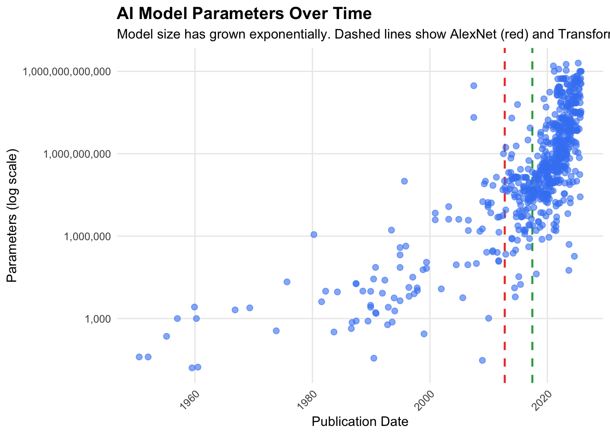
OpenAI is actually trailing behind MetaAi and xAI in ~$3b and ~$6b respectively despite being the center of much of our analysis. - Anthropic does not make the cut into the top 10, or even top 20 when peering at previous iterations of the graph. Still, comparing a company’s cluster costs to how well-known or widely used their llm is, this does not indicate that Anthropic is an overachiever anymore than it indicates that xAI or MetaAi are underachievers. - Almost every cluster owner in the public sector was outcompeted by owners in the private sector except for the US Department of Energy. The DOE also spent around $1-1.5b more than OpenAI. - Companies that were under the label of private/public had the least calculated costs in GPU clusters.
3.3 Dataset Size Over Time
Clearly, overall compute available to train model has been increasing at an exponential rate. However has this increase in compute been a proactive move to be prepared to train data-intensive models? Or has this been a reactive move in response to models that turned out to be more data intensive than expected?
To answer this question, we first need to look at trends in dataset size and model size.
Code
library(ggplot2)library(dplyr)library(readr)library(scales)# Load the notable AI models datasetmodels_data <-read_csv("./Data/ai_models_dataset/notable_ai_models.csv")# Filter to models with known dataset size and publication datedataset_plot_data <- models_data |>filter(!is.na(`Training dataset size (gradients)`),!is.na(`Publication date`)) |>mutate(`Publication date`=as.Date(`Publication date`),`Training dataset size (gradients)`=as.numeric(`Training dataset size (gradients)`))# Create scatter plotggplot(dataset_plot_data, aes(x =`Publication date`, y =`Training dataset size (gradients)`)) +geom_point(alpha =0.6, size =2, color ="#4285F4") +# Log scale for y-axisscale_y_log10(labels = comma) +# Labels and themelabs(title ="AI Model Dataset Size Over Time",subtitle ="Training dataset size has grown exponentially",x ="Publication Date",y ="Training Dataset Size (gradients, log scale)" ) +theme_minimal() +theme(plot.title =element_text(face ="bold", size =14),plot.subtitle =element_text(size =11),axis.text.x =element_text(angle =45, hjust =1),panel.grid.minor =element_blank() )
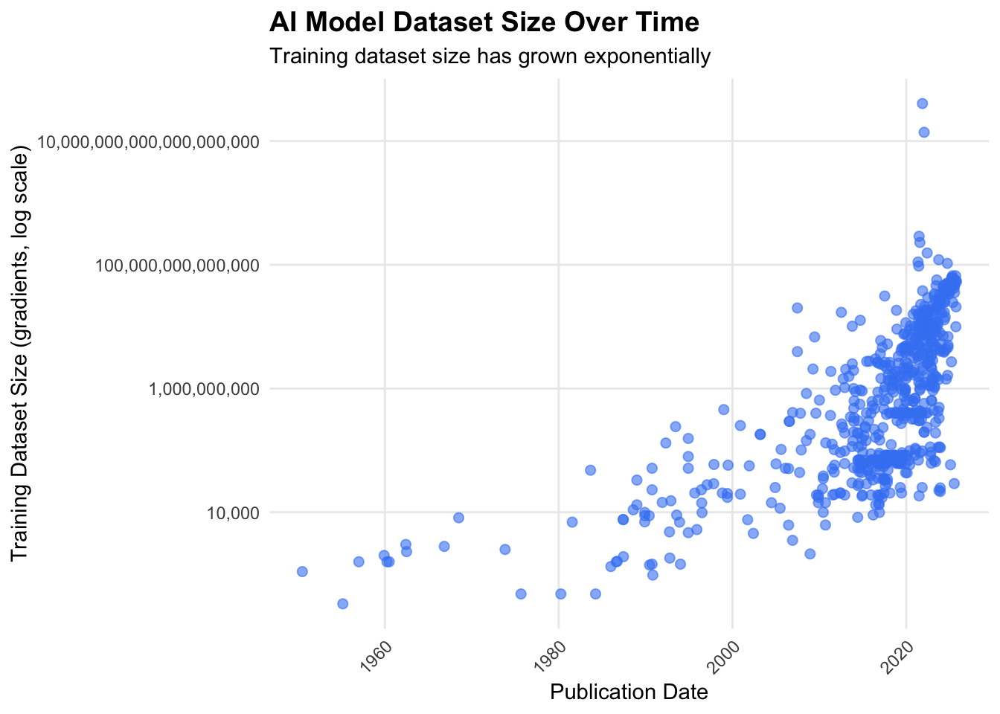
This graph simply plots dataset size over time. We adjust the y-axis to be on a log scale, meaning that seemingly linear increases actually correspond to exponential increases in non-log scales. At first it is hard to discern any notable trends other than a clear increase in recent year of dataset size.
3.3.1 Are Datasets Growing Faster Because of New Model Architectures?
Code
library(ggplot2)library(dplyr)library(readr)library(scales)# Load the notable AI models datasetmodels_data <-read_csv("./Data/ai_models_dataset/notable_ai_models.csv")# Filter to models with known dataset size and publication datedataset_plot_data <- models_data |>filter(!is.na(`Training dataset size (gradients)`),!is.na(`Publication date`)) |>mutate(`Publication date`=as.Date(`Publication date`),`Training dataset size (gradients)`=as.numeric(`Training dataset size (gradients)`))# Define key model release datesalexnet_date <-as.Date("2012-09-29")transformer_date <-as.Date("2017-06-11")# Create scatter plot with vertical lines for key modelsggplot(dataset_plot_data, aes(x =`Publication date`, y =`Training dataset size (gradients)`)) +# Add vertical lines for key modelsgeom_vline(xintercept =as.numeric(alexnet_date),linetype ="dashed", color ="#EA4335", linewidth =0.8) +geom_vline(xintercept =as.numeric(transformer_date),linetype ="dashed", color ="#34A853", linewidth =0.8) +# Add scatter pointsgeom_point(alpha =0.6, size =2, color ="#4285F4") +# Log scale for y-axisscale_y_log10(labels = comma) +# Labels and themelabs(title ="AI Model Dataset Size Over Time",subtitle ="Training dataset size has grown exponentially.\nDashed lines show AlexNet (red) and Transformer (green) releases.",x ="Publication Date",y ="Training Dataset Size (gradients, log scale)" ) +theme_minimal() +theme(plot.title =element_text(face ="bold", size =14),plot.subtitle =element_text(size =11),axis.text.x =element_text(angle =45, hjust =1),panel.grid.minor =element_blank() )
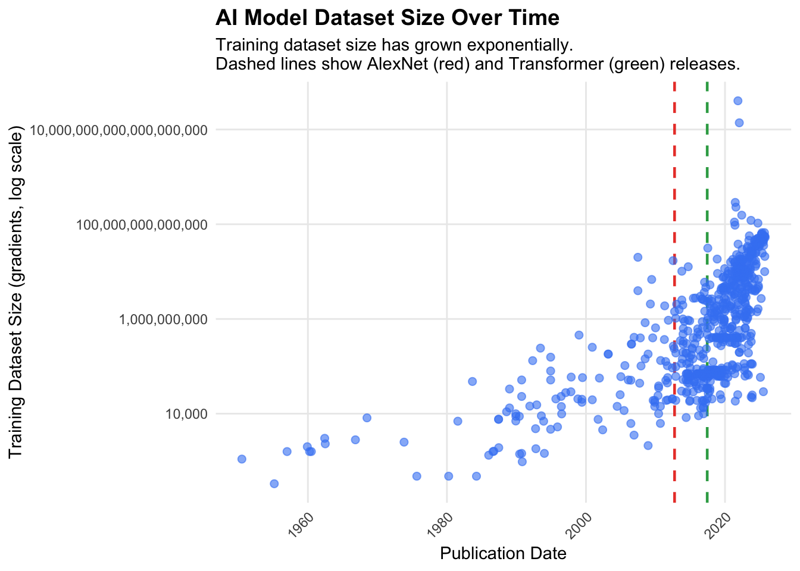
However, much of the demand for more data has been driven by new machine learning approaches. First, the advent of deep learning create demand for larger datasets. After, the advent of the transformer architecture allowed feasible training on even larger datasets (partly why large language models are considered “large”). As such, we add two dashed lines, the first being the landmark AlexNet paper, which ushered in a new era of deep learning critically, thorough the use of GPU training. The green dashed line represent the release of the landmark Attention Is All You Need paper, which introduced the transformer architecture that underlies large language models today. Adding these separators, we begin to more clearly see trends in the data. Notably, after the introduction of the transformer, we see a sharp increase in dataset size.
3.3.2 Dataset Size Growth Rate Before and After Transformer
Code
library(ggplot2)library(dplyr)library(readr)library(scales)# Load the notable AI models datasetmodels_data <-read_csv("./Data/ai_models_dataset/notable_ai_models.csv")# Filter to models with known dataset size and publication datedataset_plot_data <- models_data |>filter(!is.na(`Training dataset size (gradients)`),!is.na(`Publication date`)) |>mutate(`Publication date`=as.Date(`Publication date`),`Training dataset size (gradients)`=as.numeric(`Training dataset size (gradients)`))# Define key model release datesalexnet_date <-as.Date("2012-09-29")transformer_date <-as.Date("2017-06-11")# Split data into pre-Transformer and post-Transformer periodspre_transformer <- dataset_plot_data |>filter(`Publication date`< transformer_date)post_transformer <- dataset_plot_data |>filter(`Publication date`>= transformer_date)# Create scatter plot with two linear regression linesggplot(dataset_plot_data, aes(x =`Publication date`, y =`Training dataset size (gradients)`)) +# Add vertical lines for key modelsgeom_vline(xintercept =as.numeric(alexnet_date),linetype ="dashed", color ="#EA4335", linewidth =0.8, alpha =0.5) +geom_vline(xintercept =as.numeric(transformer_date),linetype ="dashed", color ="#34A853", linewidth =0.8) +# Add scatter pointsgeom_point(alpha =0.6, size =2, color ="#4285F4") +# Add linear regression for pre-Transformer periodgeom_smooth(data = pre_transformer,method ="lm",se =TRUE,color ="#FBBC04",fill ="#FBBC04",alpha =0.2,linewidth =1) +# Add linear regression for post-Transformer periodgeom_smooth(data = post_transformer,method ="lm",se =TRUE,color ="#34A853",fill ="#34A853",alpha =0.2,linewidth =1) +# Log scale for y-axisscale_y_log10(labels = comma) +# Labels and themelabs(title ="Dataset Size Growth Rate Before and After Transformer",subtitle ="Yellow line: pre-Transformer growth.\nGreen line: post-Transformer growth.\nShaded areas show confidence intervals.",x ="Publication Date",y ="Training Dataset Size (gradients, log scale)" ) +theme_minimal() +theme(plot.title =element_text(face ="bold", size =14),plot.subtitle =element_text(size =11),axis.text.x =element_text(angle =45, hjust =1),panel.grid.minor =element_blank() )
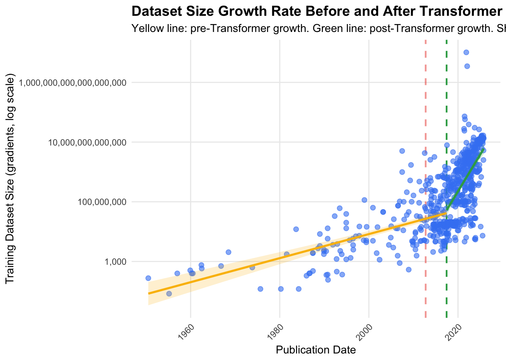
To further quantify the difference between the pre-transformer era and the post-transformer era of AI, we add regression lines of our data before the transformer and after the transformer. We already see an exponential increase in dataset size before the transformer, as denoted by the yellow line. However, after the transformer, this increase becomes much sharper, as shown by the green line.
By all accounts, dataset used to train ML models is experiencing lightning fast growth.
3.4 Model Parameters Over Time
Dataset size is only one aspect that increases demand of compute, but the size of the model being trained is another factor that influences how much compute is required. We create a similar graph to those above, but this time plotting model size (number of trainable parameters).
Code
library(ggplot2)library(dplyr)library(readr)library(scales)# Load the notable AI models datasetmodels_data <-read_csv("./Data/ai_models_dataset/notable_ai_models.csv")# Filter to models with known parameters and publication dateparameters_plot_data <- models_data |>filter(!is.na(Parameters),!is.na(`Publication date`)) |>mutate(`Publication date`=as.Date(`Publication date`),Parameters =as.numeric(Parameters))# Define key model release datesalexnet_date <-as.Date("2012-09-29")transformer_date <-as.Date("2017-06-11")# Split data into pre-Transformer and post-Transformer periodspre_transformer <- parameters_plot_data |>filter(`Publication date`< transformer_date)post_transformer <- parameters_plot_data |>filter(`Publication date`>= transformer_date)# Create scatter plot with two linear regression linesggplot(parameters_plot_data, aes(x =`Publication date`, y = Parameters)) +# Add vertical lines for key modelsgeom_vline(xintercept =as.numeric(alexnet_date),linetype ="dashed", color ="#EA4335", linewidth =0.8, alpha =0.5) +geom_vline(xintercept =as.numeric(transformer_date),linetype ="dashed", color ="#34A853", linewidth =0.8) +# Add scatter pointsgeom_point(alpha =0.6, size =2, color ="#4285F4") +# Add linear regression for pre-Transformer periodgeom_smooth(data = pre_transformer,method ="lm",se =TRUE,color ="#FBBC04",fill ="#FBBC04",alpha =0.2,linewidth =1) +# Add linear regression for post-Transformer periodgeom_smooth(data = post_transformer,method ="lm",se =TRUE,color ="#34A853",fill ="#34A853",alpha =0.2,linewidth =1) +# Log scale for y-axisscale_y_log10(labels = comma) +# Labels and themelabs(title ="Model Parameters Growth Rate Before and After Transformer",subtitle ="Yellow line: pre-Transformer growth.\nGreen line: post-Transformer growth. Shaded areas show confidence intervals.",x ="Publication Date",y ="Parameters (log scale)" ) +theme_minimal() +theme(plot.title =element_text(face ="bold", size =14),plot.subtitle =element_text(size =11),axis.text.x =element_text(angle =45, hjust =1),panel.grid.minor =element_blank() )
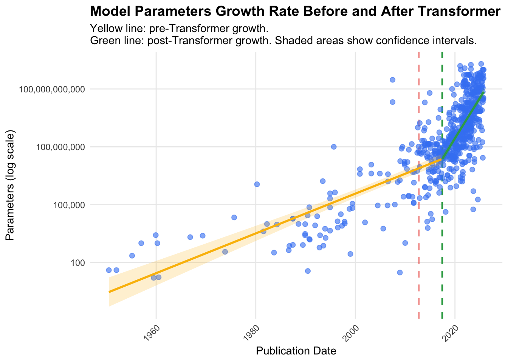
In this plot we see a trend that follows almost exactly the same trend as the trends in dataset size. Until the the transformer, parameter count is increase rapidly (exponentially, in fact) already, but once the transformer is introduced we start to see an even more rapid increase.
3.5 Is Compute Supply Finally Catching Up With Model Demands?
So overall, we see both an exponential increases in the demand of compute (increases in dataset size and model size) and exponential increases in the supply of compute (GPU cluster computer availability). Naturally, we can wonder whether the supply of compute is keeping pace with the demand, or is the demand putting strain on the supply.
Code
library(ggplot2)library(dplyr)library(readr)library(scales)# Load the training time resultstraining_times <-read_csv("./Data/gpu_cluster_training_times.csv")# Convert date to datetimetraining_times <- training_times |>mutate(`First Operational Date`=as.Date(`First Operational Date`))# Create scatter plotggplot(training_times, aes(x =`First Operational Date`, y =`Training time (hours)`)) +geom_point(alpha =0.7, size =3, color ="#4285F4") +# Add a trend linegeom_smooth(method ="loess", se =TRUE, color ="#D32F2F", alpha =0.2) +# Log scale for y-axis to better show the rangescale_y_log10(labels = comma) +# Format x-axis datesscale_x_date(date_breaks ="2 years", date_labels ="%Y") +labs(title ="Average Training Time for Top 10 Frontier Models\non Rank-1 GPU Clusters",x ="GPU Cluster First Operational Date",y ="Average Training Time (hours, log scale)",caption ="Based on top 10 frontier models by training compute released before each cluster's operational date" ) +theme_minimal() +theme(plot.title =element_text(face ="bold", size =14),plot.subtitle =element_text(size =11),axis.text.x =element_text(angle =45, hjust =1),panel.grid.minor =element_blank() )
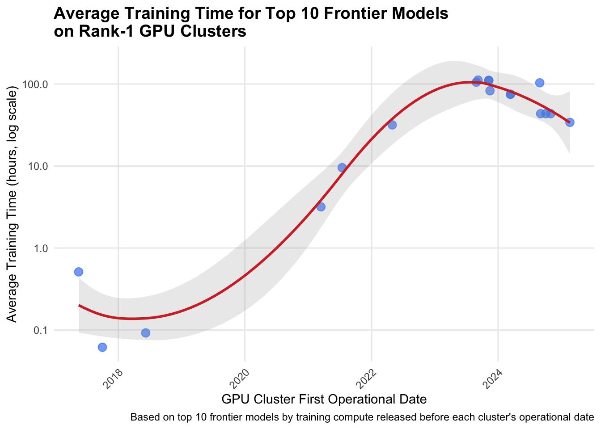
Here we plot the average training time in hours for the top 10 best models at the time of the first operational date of the best GPU cluster at the time of its opening. Simply put, we graph the training time of the best models on the best GPU cluster of the time. We see a really interesting trend here. If compute supply where to keep pace with compute demand, we would expect there to be no change in average training time. Instead, we see that in that in the early 2020s there is an exponential increase in the training time of best models (even using the best GPU cluster). However, nearing 2024 and 2025, we see that compute availability starts to catch up.
3.6 What Factors Explain Most of the Variation in Benchmark Performance?
The purpose of PCA (principle component analysis) is to reduce dimensionality by finding a few linear combinations of the variables that capture most of the variance. In this case, we wanted to see how different quantitative variables contributed to the frontier AI models with the best score.
In the first table below, PC1 and PC2 contribute to a majority (~60% = PC2 cumulative proportion) of the total variation. With this information, we plotted our benchmarks on the above graphs for PC1 and PC2. The left graph shows how each row, or model, compares in score. For example, row 26 (the Grok 4 model in the frontier_merged dataset) has the highest performance by a wide margin. This makes sense because when you look at the right graph, we can draw a perpendicular line from that bottom point to each of our most important vectors (prolonged), and the distance to each of the intersections will be high.
Ultimately, our most important variables: Training compute in the form of FLOP_math, 2023 USD, Upfront, and FLOP_model as well as hardware quantity rank highly in our PCA analysis. This is consistent with everything we have seen so far from these frontier developers.
Code
print('Sanity check with total contribution to PC1 & PC2')
[1] "Sanity check with total contribution to PC1 & PC2"
Training compute (FLOP)_math
0.49605964
Training compute cost (2023 USD)
0.46668279
Training compute cost (upfront)
0.46501992
Hardware quantity
0.46501992
Training compute (FLOP)_model
0.44961325
Hardware FP16
0.39030088
Hardware FP32
0.39030088
Hardware TF16
0.39002152
Assumed hardware performance (FLOP/s)
0.39002152
Power per GPU
0.37974732
stderr
0.24851261
(DEPRECATED) Training dataset size (datapoints)
0.16681305
Parameters
0.16681305
Training compute lower bound
0.12107563
Hardware age
0.11106774
Hardware count
0.06304506
3.7 Which Countries Are Becoming the Global Centers of Compute?
Clearly, AI developers are prioritizing increasing their compute capacity as evident by the exponential increase in compute capacity that every major AI-developing company has experienced. Naturally, the construction and operation of these GPU clusters will have huge effects in the communities they are built, their governance will be influenced by their location, and localities with more compute capacity will have more leverage on growing tech and companies. To explore this further, we map the number of GPU clusters per country.
Code
library(ggplot2)library(dplyr)library(readr)library(maps)library(viridis)library(RColorBrewer)library(classInt)# Load GPU clusters datasetgpu_clusters <-read_csv("./Data/gpu_clusters_dataset/gpu_clusters.csv")# Get world map dataworld_map <-map_data("world")# Count existing clusters by countryexisting_clusters <- gpu_clusters |>filter(Status =="Existing") |>group_by(Country) |>summarise(count =n()) |>rename(region = Country)# Count planned clusters by countryplanned_clusters <- gpu_clusters |>filter(Status =="Planned") |>group_by(Country) |>summarise(count =n()) |>rename(region = Country)# Standardize country names to match map_datastandardize_country_names <-function(df) { df |>mutate(region =case_when( region =="United States of America"~"USA", region =="United Kingdom of Great Britain and Northern Ireland"~"UK", region =="Russian Federation"~"Russia", region =="Republic of Korea"~"South Korea", region =="Viet Nam"~"Vietnam", region =="United Arab Emirates"~"UAE",TRUE~ region ))}existing_clusters <-standardize_country_names(existing_clusters)planned_clusters <-standardize_country_names(planned_clusters)# Join with world mapworld_existing <- world_map |>left_join(existing_clusters, by ="region")world_planned <- world_map |>left_join(planned_clusters, by ="region")# Calculate Jenks natural breaks for existing clustersexisting_breaks <-classIntervals(existing_clusters$count, n =5, style ="jenks")existing_clusters <- existing_clusters |>mutate(count_binned =cut(count, breaks = existing_breaks$brks, include.lowest =TRUE, dig.lab =10))world_existing <- world_map |>left_join(existing_clusters, by ="region")# Calculate Jenks natural breaks for planned clustersplanned_breaks <-classIntervals(planned_clusters$count, n =5, style ="jenks")planned_clusters <- planned_clusters |>mutate(count_binned =cut(count, breaks = planned_breaks$brks, include.lowest =TRUE, dig.lab =10))world_planned <- world_map |>left_join(planned_clusters, by ="region")# Map 1: Existing GPU Clustersmap_existing <-ggplot(world_existing, aes(x = long, y = lat, group = group, fill = count_binned)) +geom_polygon(color ="white", linewidth =0.1) +scale_fill_brewer(palette ="Blues", na.value ="gray90", name ="Count") +labs(title ="Existing GPU Clusters by Country",subtitle ="Geographic distribution of operational GPU clusters",x =NULL,y =NULL ) +theme_minimal() +theme(plot.title =element_text(face ="bold", size =14),axis.text =element_blank(),axis.ticks =element_blank(),panel.grid =element_blank() ) +coord_fixed(1.3)# Map 2: Planned GPU Clustersmap_planned <-ggplot(world_planned, aes(x = long, y = lat, group = group, fill = count_binned)) +geom_polygon(color ="white", linewidth =0.1) +scale_fill_brewer(palette ="Blues", na.value ="gray90", name ="Count") +labs(title ="Planned GPU Clusters by Country",subtitle ="Geographic distribution of planned GPU clusters",x =NULL,y =NULL ) +theme_minimal() +theme(plot.title =element_text(face ="bold", size =14),axis.text =element_blank(),axis.ticks =element_blank(),panel.grid =element_blank() ) +coord_fixed(1.3)# Map 3: Combined (Existing + Planned Total)combined_clusters <- gpu_clusters |>filter(Status %in%c("Existing", "Planned")) |>group_by(Country) |>summarise(count =n(), .groups ="drop") |>rename(region = Country)combined_clusters <-standardize_country_names(combined_clusters)# Calculate Jenks natural breaks for combined clusterscombined_breaks <-classIntervals(combined_clusters$count, n =5, style ="jenks")combined_clusters <- combined_clusters |>mutate(count_binned =cut(count, breaks = combined_breaks$brks, include.lowest =TRUE, dig.lab =10))world_combined <- world_map |>left_join(combined_clusters, by ="region")map_combined <-ggplot(world_combined, aes(x = long, y = lat, group = group, fill = count_binned)) +geom_polygon(color ="white", linewidth =0.1) +scale_fill_brewer(palette ="Blues", na.value ="gray90", name ="Count") +labs(title ="Total GPU Clusters by Country (Existing + Planned)",subtitle ="Combined geographic distribution of all GPU clusters",x =NULL,y =NULL ) +theme_minimal() +theme(plot.title =element_text(face ="bold", size =14),axis.text =element_blank(),axis.ticks =element_blank(),panel.grid =element_blank() ) +coord_fixed(1.3)# Display the mapsmap_existing
First we map the number of GPU clusters already existing globally. We can see that the two major players in compute clusters are the United States and China, with some development in Europe, and even lighter development in Latin America, the Middle East, South Asia, and Oceania.
Code
map_planned
To understand the future of GPU cluster allocation, we also map the number of planned GPU clusters in each country. Here we see similar trends to the previous map: the United States and China lead the way in terms of GPU cluster development, while the rest of the world lags behind. Outside of the top two countries, we do see France maintaining their strength in compute within Europe, Brazil maintaining its strength in Latin America, and Saudi Arabia maintaining its strength in the middle east.
Code
map_combined
Combining existing and planned GPU cluster maps, we see that the countries that have previously benefitted from AI development and GPU cluster development (namely the US and China) will continue to be the countries that benefit from further development, while most of the rest of the world sees lagging development.